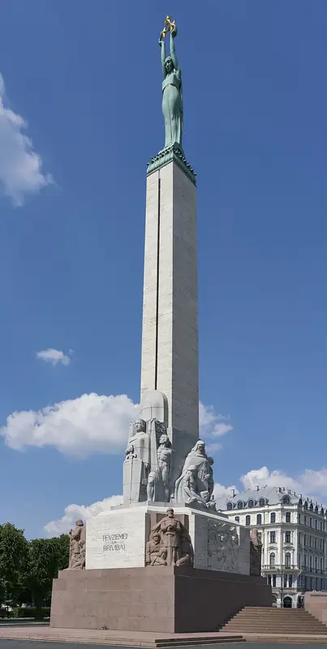
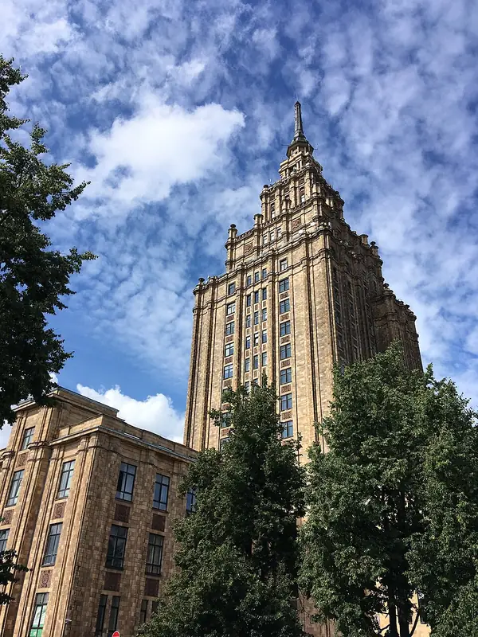
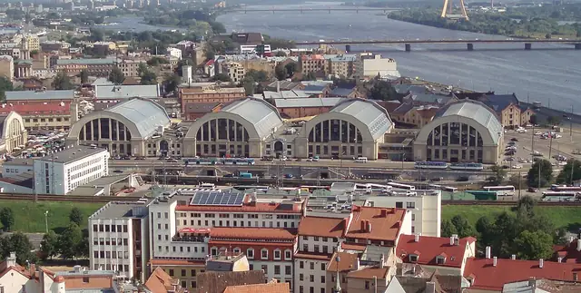
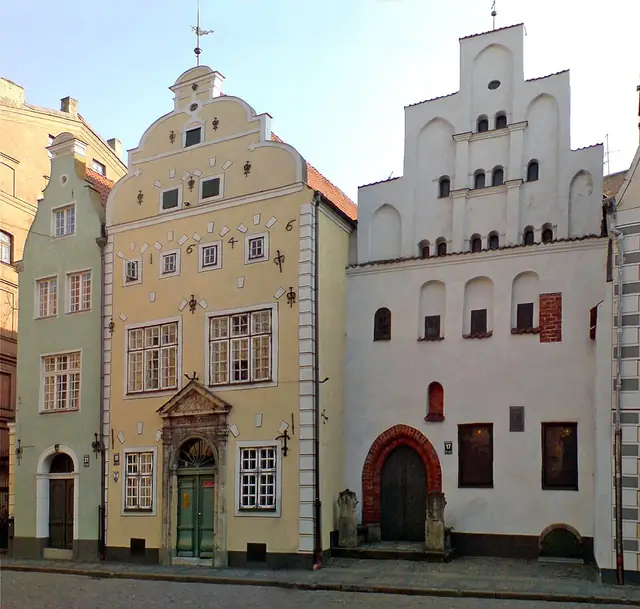
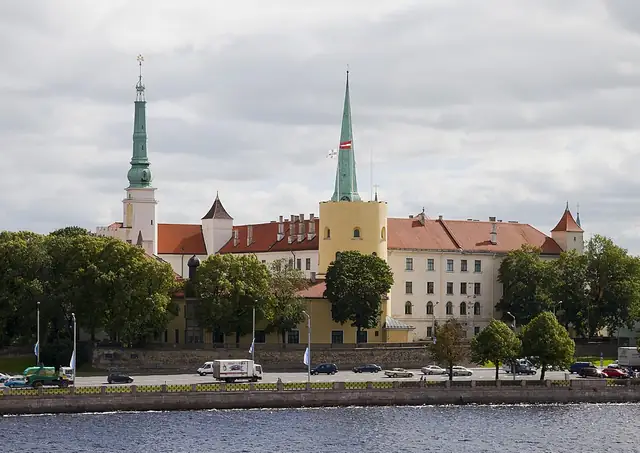
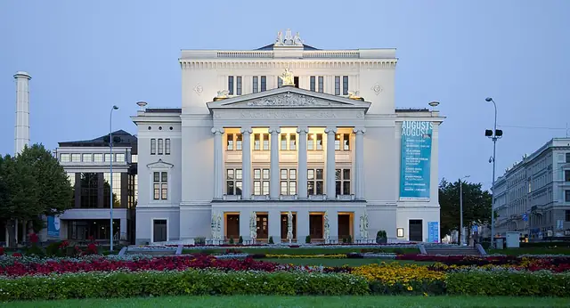
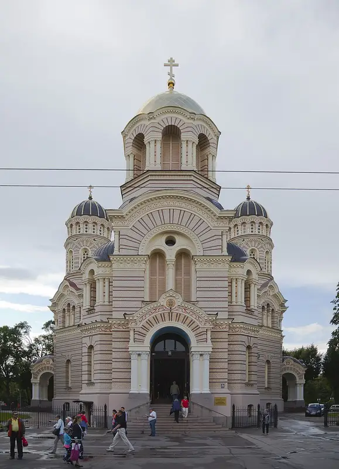
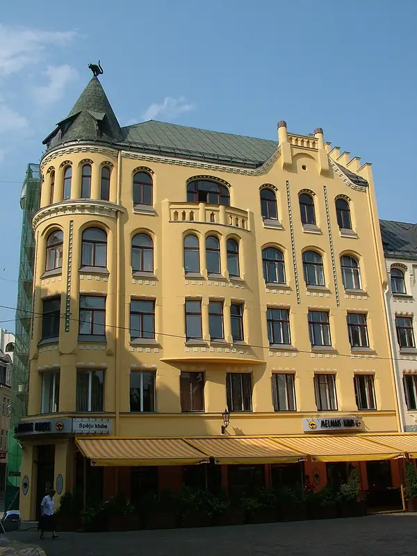
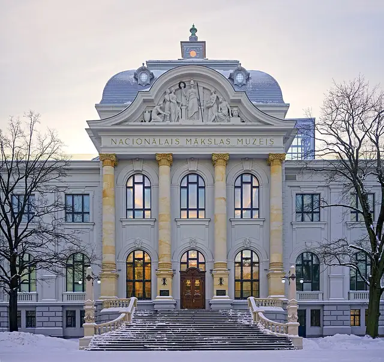
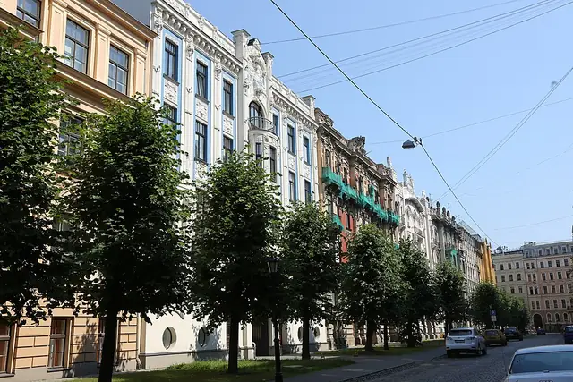

The Art Nouveau Capital
Riga architecture
Art Nouveau buildings make up about a third of all the buildings in central Riga, which historian Jānis Krastiņš says is the highest concentration of the style anywhere in the world. Riga was a European Capital of Culture in 2014.
- 15Landmarks
- 1209Oldest · St. Peter's Church
- 368 mTallest · Riga Radio and TV Tower
- 11Architects
Map and Look Around
Tap a numbered pin to see that landmark from the street with Apple Look Around.
Eat and stay near
Restaurants
Hotels
From Apple Maps. Walking times are estimates from straight-line distance.
Before you go
- Fly intoRIX Riga Airport (RIX)
RIX Riga Airport lies in Mārupe Municipality, about 10 km west of the city centre, and is the largest airport in the Baltic states, with direct flights to 107 destinations as of September 2024. It was built in 1973 to replace the outdated Spilve Airport and is the main hub of the national airline airBaltic.
- CurrencyEuro (€)
- LanguageLatvian
Latvian is a Baltic language written in the Latin alphabet with extra letters such as ā, č and ļ. Say 'Sveiki' to greet someone, and 'Apsveicam' to congratulate them.
- Getting aroundTrams, Trolleybuses & Buses
Public transport is run by Rīgas Satiksme, which operates trams, buses and trolleybuses on an extensive network of routes across the city. Since 2012 a single city company has also run the minibus services that private owners used to operate.
- Where to stayFind hotels in Riga on Expedia Compare on Booking.com Vacation rentals on Vrbo
Stamped! may earn a commission when you book through these links.
- Tours and ticketsFind tours in Riga on GetYourGuide More tours on Viator
Skip-the-line tickets and guided tours of the landmarks. Stamped! may earn a commission.
15 landmarks in Riga
-

Photo: Diliff, CC BY-SA 3.0, via Wikimedia Commons House of the Blackheads
Mazā Grēcinieku iela 7, Riga, Latvia
The House of the Blackheads was first built in 1334 as a warehouse and meeting hall for merchants, and it was the biggest public building in Riga. From the mid-15th century it was used by the Brotherhood of Blackheads, a guild for unmarried merchants, shipowners and foreigners, and its ornate Mannerist decoration was added in the early 17th century. Bombed to ruins in 1941 and cleared by the Soviet authorities in 1948, it was rebuilt from 1996 to 2000, with more than 5,000 people paying to place a brick, and reopened on 9 December 1999.
- Built
- 1334
- Style
- Mannerism
- Today
- Museum and event venue
-
Photo: Diliff, CC BY-SA 3.0, via Wikimedia Commons St. Peter's Church
Reformācijas laukums 1, Riga, Latvia
St. Peter's Church is first mentioned in 1209 and is now a Lutheran parish church in Old Riga. Its tower has a dramatic history: a 136-metre steeple added in 1491 collapsed in 1666, and the copper-roofed wooden spire finished in 1690 was the tallest wooden structure in Europe at the time. Artillery fire destroyed the church on 29 June 1941, and it was restored from 1967 to 1983. Today a lift carries visitors up the tower to a viewing level 72 metres above the city.
- Built
- 1209
- Architect
- Rupert Bindenschu (17th-century tower)
- Style
- Gothic
- Today
- Church
-
Photo: Zairon, CC BY-SA 4.0, via Wikimedia Commons Riga Cathedral
Herdera laukums 6, Riga, Latvia
Riga Cathedral was founded in 1211 by Bishop Albert of Riga near the River Daugava and is thought to be the largest medieval church in the Baltic states. It is the seat of the Lutheran Archbishop of Riga. Its famous organ was built by Walcker of Ludwigsburg in 1882 and 1883 and first played in January 1884. Religious services were banned in the Soviet era, when the cathedral was used as a concert hall, and they resumed in 1991.
- Built
- 1211
- Style
- Brick Gothic
- Today
- Cathedral
-

Photo: Virtual-Pano, CC BY-SA 4.0, via Wikimedia Commons Freedom Monument
Brīvības laukums, Riga, Latvia
The Freedom Monument honours the soldiers killed in the Latvian War of Independence of 1918 to 1920 and is a symbol of Latvia's freedom and sovereignty. Designed by the sculptor Kārlis Zāle and unveiled in 1935, it rises 42 metres in granite, travertine and copper. Thirteen groups of sculptures and reliefs show Latvian culture and history, and a 19-metre travertine column carries a copper figure of Liberty at the top. It is the focal point of official ceremonies and public gatherings in Riga.
- Built
- 1935
- Architect
- Kārlis Zāle
- Height
- 42 m (138 ft)
- Today
- Monument
-

Photo: Sergei Gussev, CC BY 2.0, via Wikimedia Commons Latvian Academy of Sciences
Vilhelma Purvīša iela 1, Riga, Latvia
The Latvian Academy of Sciences building was built from 1951 to 1961 and, at 108 metres, was the first skyscraper in Soviet Latvia. Designed by Osvalds Tīlmanis, Vaidelotis Apsītis and Kārlis Plūksne, it is a cousin of Moscow's Stalin-era towers, decorated with hammers and sickles alongside Latvian folk motifs. The red star on its spire was removed after Latvia regained independence in 1991. Locals have nicknamed it 'Stalin's birthday cake'.
- Built
- 1961
- Architect
- Osvalds Tīlmanis, Vaidelotis Apsītis and Kārlis Plūksne
- Style
- Stalinist architecture
- Height
- 108 m (354 ft)
- Today
- Academy of sciences
-

Photo: David Holt uploaded and derivative work: MrPanyGoff, CC BY-SA 2.0, via Wikimedia Commons Riga Central Market
Prāgas iela, Riga, Latvia
Riga Central Market is one of Europe's largest markets and has been part of the Old Riga UNESCO World Heritage Site since 1998. Planned from 1922 and built from 1924 to 1930, its five main pavilions reuse old German Zeppelin hangars, finished with Neoclassical and Art Deco touches. The market covers 72,300 square metres and holds more than 3,000 trading stands. It is owned today by the city of Riga.
- Built
- 1930
- Architect
- Pāvils Dreijmanis
- Style
- Art Deco
- Today
- Market
-

Photo: Martin Thirolf, CC BY-SA 2.0 de, via Wikimedia Commons Three Brothers
Mazā Pils iela 17, 19 and 21, Riga, Latvia
The Three Brothers are three neighbouring houses on Mazā Pils iela that together form the oldest group of dwelling houses in Riga. Number 17, the oldest, dates from the late 15th century and has a crow-stepped gable and Gothic details, while number 19 has a façade from 1646 showing Dutch Mannerist influence. Each house shows a different stage in how Riga's homes were built. They were restored in the 1950s and now house the National Heritage Board of Latvia.
- Built
- 1718
- Style
- Mannerism
- Today
- Offices of the National Heritage Board
-

Photo: Diego Delso, CC BY-SA 3.0, via Wikimedia Commons Riga Castle
Pils laukums 3, Riga, Latvia
Riga Castle stands on the banks of the Daugava and was founded in 1330. It was thoroughly rebuilt between 1497 and 1515, and the Swedes added large annexes after they took the city in the 17th century. The castle kept growing and changing until the 19th century, and the architect Eižens Laube renovated parts of it in the 1930s. Since 1938 it has been the official residence of the President of Latvia, and it also houses several museums.
- Built
- 1515
- Style
- Classicism
- Today
- Presidential residence and museums
-

Photo: Diego Delso, CC BY-SA 3.0, via Wikimedia Commons Latvian National Opera
Aspazijas bulvāris 3, Riga, Latvia
The Latvian National Opera and Ballet performs in a Classicist theatre on the bank of the Riga Canal, close to the Freedom Monument. The building was completed in 1863 to a design by Ludwig Bohnstedt, burned down on 14 June 1882 leaving only its outer walls, and was rebuilt by 1887 under the city's chief architect Reinhold Schmaeling. Its Great Hall seats 946 people. The company stages almost 200 opera and ballet performances each season, from mid-September to the end of May.
- Built
- 1863
- Architect
- Ludwig Bohnstedt
- Style
- Classicism
- Today
- Opera house
-

Photo: Diego Delso, CC BY-SA 3.0, via Wikimedia Commons Nativity Cathedral
Brīvības bulvāris 23, Riga, Latvia
The Nativity of Christ Cathedral was built from 1876 to 1883, when Latvia was part of the Russian Empire, to a Neo-Byzantine design by Nikolai Chagin and Robert Pflug. It is the largest Orthodox cathedral in the former Baltic provinces, built with the blessing of Tsar Alexander II. The cathedral is known for its icons, some painted by Vasili Vereshchagin, and its decorations were made by the firm of August Volz. During the First World War occupying German troops turned it into a Lutheran church.
- Built
- 1883
- Architect
- Nikolai Chagin and Robert Pflug
- Style
- Neo-Byzantine
- Today
- Cathedral
-

Photo: Horvat, Public domain, via Wikimedia Commons Cat House
Meistaru iela 10, Riga, Latvia
The Cat House was built in 1909 to a design by Friedrich Scheffel, in a medieval style with touches of Art Nouveau. It is famous for the two cats on its roof, with arched backs and raised tails. The story goes that the owner had a grudge against the Great Guild next door and set the cats with their tails pointed at the guild house. The cats were later ordered to be turned to face it instead.
- Built
- 1909
- Architect
- Friedrich Scheffel
- Style
- Art Nouveau
- Today
- Residential and commercial building
-

Photo: AS LNMM, CC BY 4.0, via Wikimedia Commons Latvian National Museum of Art
Jaņa Rozentāla laukums 1, Riga, Latvia
The Latvian National Museum of Art traces its roots to the Riga City Art Gallery, which opened in 1869, and today holds more than 100,000 works across six sites. Its main building was built from 1903 to 1905 to a design by Wilhelm Neumann, who was also the museum's first director. It is one of the last eclectic buildings in Riga, in Baroque forms with an Art Nouveau interior, sculptures by August Volz and paintings by Vilhelms Purvītis. It shows Latvian art from the 18th century to the mid-20th century.
- Built
- 1905
- Architect
- Wilhelm Neumann
- Style
- Eclecticism
- Today
- Museum
-
Riga Radio and TV Tower
Zaķusala, Riga, Latvia
The Riga Radio and TV Tower is the tallest tower in the European Union, reaching 368.5 metres. It was built from 1979 to 1989 with Soviet funding on Zaķusala, an island in the middle of the River Daugava, designed by Kims Nikuradze, Nikolajs Sergijevskis and Viktors Savčenko. It once had a restaurant at 93 metres and a public viewing platform at 97 metres. The tower has been closed to visitors since 2019 for a renewal project.
- Built
- 1989
- Architect
- Kims Nikuradze, Nikolajs Sergijevskis and Viktors Savčenko
- Height
- 368 m (1,209 ft)
- Today
- Radio and TV tower
-
Photo: National Library of Latvia, Public domain, via Wikimedia Commons National Library of Latvia
Mūkusalas iela 3, Riga, Latvia
The National Library of Latvia was founded in 1919, one year after Latvia became independent. Its main building, the Castle of Light, was designed in 1989 by the Latvian-American architect Gunnar Birkerts, inspired by the Castle of Light and the Glass Mountain of Latvian mythology. It finally opened in 2014 on the left bank of the Daugava. The building has 13 floors and stands 68 metres high.
- Built
- 2014
- Architect
- Gunnar Birkerts
- Height
- 68 m (223 ft)
- Stories
- 13
- Today
- Library
-

Photo: Hans A. Rosbach, CC BY-SA 3.0, via Wikimedia Commons Albert Street
Alberta iela, Riga, Latvia
Albert Street was laid out in 1901 and named after Bishop Albert, who founded Riga in 1201. It is lined with Art Nouveau apartment buildings, many designed by the architect Mikhail Eisenstein, alongside work by Konstantīns Pēkšēns and his pupil Eižens Laube. The philosopher Isaiah Berlin spent his first years at number 2a. Since 2009 Pēkšēns' former home at number 12 has housed the Riga Art Nouveau Museum.
- Built
- 1901
- Architect
- Mikhail Eisenstein
- Style
- Art Nouveau
- Today
- Residential street and museum


The app's quiz · 10 questions
How well do you know Riga?
The same quiz as in Stamped!: name the landmark, its architect, its style or the year it was finished. Every round is different.
Know Riga well?
Locals know their city best. Suggest a landmark we're missing, a fix to one we have, or share your own photo of one. Every suggestion is checked before it goes into the app.
More cities in Europe
- Amsterdam
- Antwerp
- Athens
- Barcelona
- Bath
- Berlin
- Bilbao
- Brussels
- Budapest
- Copenhagen
- Cork
- Dublin
- Edinburgh
- Florence
- Glasgow
- Granada
- Hamburg
- Helsinki
- Istanbul
- Kraków
- Lisbon
- London
- Madrid
- Marseille
- Milan
- Munich
- Naples
- Nice
- Oslo
- Paris
- Porto
- Prague
- Reykjavik
- Rome
- Rotterdam
- Salzburg
- Seville
- St. Petersburg
- Stockholm
- Tbilisi
- Valencia
- Venice
- Vienna
- Warsaw
- Zurich
Stamp all 15 in Stamped!
Fly through Riga in photoreal 3D, take its 10-question quiz, plan your days and earn a passport stamp at every landmark. Free on iPhone, iPad, Mac and Apple Vision Pro.
Download on theApp StoreEnjoying the guides? Leave a tip to help keep new cities coming.